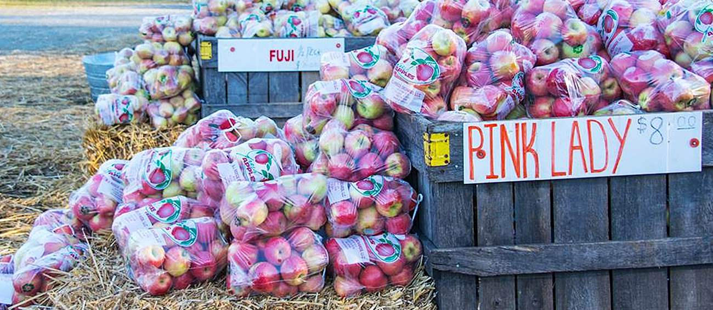

October 2026: Georgia Apple Festival in Ellijay
October 14, 2026
Every October, Ellijay transforms into the heart of Georgia’s apple harvest. Known as the Apple Capital of Georgia, Gilmer County produces the vast majority of the state’s apples—over 600,000 bushels annually across more than 20 varieties including Gala, Fuji, Rome Beauty, and Granny Smith.
The Georgia Apple Festival, now in its 55th year in 2026, runs on the second and third full weekends of October (October 10–11 and 17–18). Hundreds of vendors fill the Ellijay Lions Club Fairgrounds with crafts, art, food, and every apple product imaginable—fried pies, fritters, cider, and more. There’s live music, an antique tractor show, classic cars, and the chance to visit nearby orchards for U-pick experiences at places like R&A Orchards and Penland’s Apple House.
Local flavor runs deep here. The festival honors the shift from cotton to apples after the boll weevil and other economic changes in the early 20th century. John W. Clayton is credited with introducing the first apples to Gilmer County in 1903. Today the cool mountain climate, elevation, and rich soil make Ellijay ideal for apples, and the festival draws visitors from across the country.
Whether you’re picking apples, sipping cider, or just enjoying the mountain views, October in Ellijay is pure local flavor.